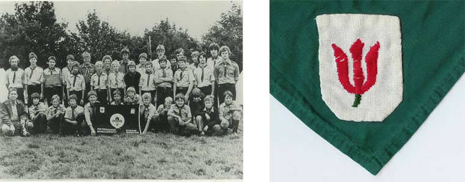
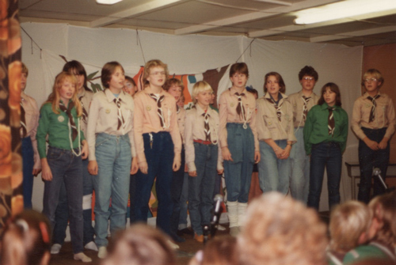
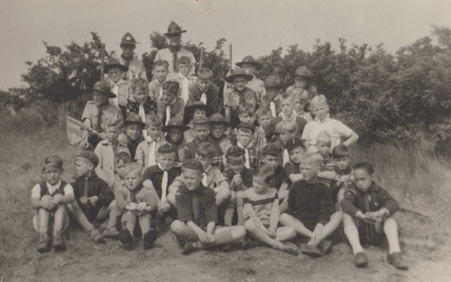
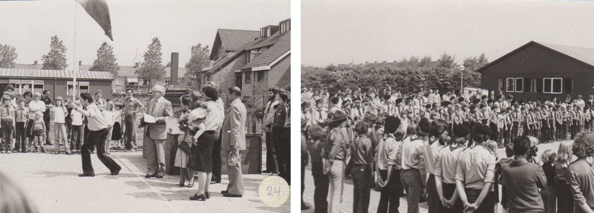
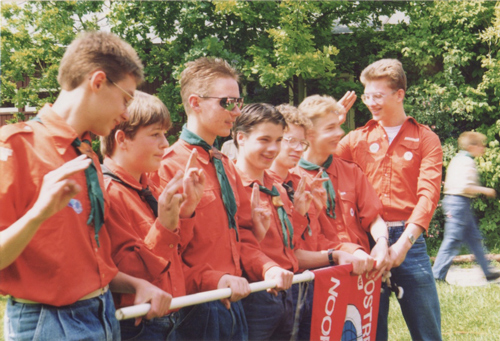
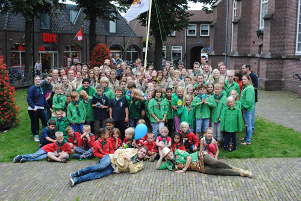

Geschiedenis
Oprichting jongensgroep Bostreno
Op 29 juni 1957 werd de Bostrenogroep opgericht. Het eerste bestuur bestond uit de heren Brinkhof, Doddema en Fiere, meneer Brinkhof was de eerste hopman en groepsleider van Scouting Bostreno. Hij en zijn vrouw hebben de naam Bostreno, dat voor Bollenstreek Noordwijkerhout staat, bedacht. De donkergroene das en het embleem: een rode tulp op een wit veld, is tevens een ontwerp van het echtpaar Brinkhof: het rood van de tulp symboliseert net als de rode bloemen uit het verhaal van Sint Joris gerechtigheid, het wit symboliseert de reinheid, van waaruit iedere scout dient te leven en het donkergroen staat voor de kleur van de bladeren die uit de bollen groeien op de vele bollenvelden die Noordwijkerhout telt.
Het eerste verkenners clubhuis was een onbewoonbaar verklaarde woning aan de Zeestraat ter hoogte van nr. 98. In januari 1958 werd de welpenhorde opgericht, de eerste Akela van deze groep was mevrouw Doddema. Het tweede clubhuis en het eerste welpenhorde hol stond achter de kruidenierswinkel van de familie van Dijk (Dorpsstraat 20 tegenover de Witte Kerk). Later kwam er boven de toenmalige garage en opslagplaats een apart verkennerslokaal en een leiderslokaal.

Oprichting meidengroep Bronsgeest
In 1959 werd de Bronsgeest groep opgericht. De naam Bronsgeest is afkomstig van het landgoed Leeuwenhorst: mevrouw de baronesse Gevers verleende de groep toestemming om deze naam te gebruiken. De officiële oprichtingsdatum is 20 november 1959, maar er werden al eerder opkomsten gedraaid: men wilde eerst zien of er genoeg animo was voor een meisjesgroep. Mevrouw Smits-Harst en mevrouw Ligtvoet-Schöne zijn de twee oprichters van deze groep. De eerste opkomsten van de padvindsters waren in de oude Gemeentewoning (Gemeentewoning betekende een woning van de Hervormde Gemeente) aan de Herenweg tegenover het gemeentehuis, waar op de eerste verdieping 2 lokalen gehuurd werden.
Scouting is een landelijke organisatie, daarom waren er regels verbonden aan het oprichten van een groep, deze regels werden voor meisjesgroepen opgesteld door het Nederlandse Padvindsters Gilde. Een van de regels was dat een groep voldoende leden moest hebben en leiding moest hebben die een leidingcursus hadden gevolgd. Pas als aan deze eisen was voldaan mocht een groep zelfstandig draaien. De Bronsgeest groep kon dankzij de Brittenburg groep uit Katwijk draaien. In 1961 mocht de groep zelfstandig onder de naam Bronsgeest groep draaien. Inmiddels was er toen ook een kabouterkring aan de groep toegevoegd.

Verhuizing Scouting Bronsgeest
Toen de domineesfamilie (Fam. Smits) vertrok kwam de Pastorie aan de Herenweg leeg te staan. De gemeentewoningen waarin de Bronsgeestgroep tot nu toe haar opkomsten draaide zouden worden afgebroken om daar een nieuwe Pastorie te bouwen. Zodoende verhuisde de groep haar opkomsten naar de oude domineeswoning: Open House.
Uitbreiding Scouting Bostreno en Scouting Bronsgeest
In de jaren zestig verhuisde de Bostrenogroep naar een openvlakte aan de Zeestraat, nabij de brug op de toenmalige losplaats. Daar werd in 1968 een hordehol bijgebouwd. In 1970 werd de eerste Stam gevormd, de eerste oubaas van de stam was de heer Brons (met als scoutingnaam: PABRO). De Stam gebruikte de zolder van het Open House op de Herenweg als clubhuis.

Ook de Bronsgeest groep breidde uit: in 1966 werd er een seniorvendel opgericht (voor meisjes van 14 tot 17 jaar). In Voorhout was er ook een meisjesgroep opgericht, maar helaas werd deze in 1968 opgeheven wegens het vertrek van de leiding. Een deel van de padvindsters van deze groep kwamen naar Scouting Bronsgeest, een ander gedeelte ging naar een groep in Oegstgeest.
De Van der Weijdenlaan
In 1971 krijgt de Bronsgeest toestemming van de gemeente om een perceel aan de Schippersvaartweg te gebruiken om een clubhuis op te bouwen. Onder toezicht van een opzichter, bouwen leden en ouders van leden zelf een clubhuis. Binnen een dag was het wind- en waterdicht. Helaas werd dit clubhuis begin april 1973 vrijwel met de grond gelijk gemaakt door een storm. De groep is echter niet voor één gat te vangen: het clubhuis wordt weer hersteld en opgebouwd dankzij ongeveer 200 vrijwilligers en enkele gulle donateurs.
In 1978 moet de padvindstergroep alweer weg van deze locatie. De groep kreeg van de gemeente toestemming om op het terrein aan de Van der Weijdenlaan een clubhuis te bouwen. Na enig aandringen van de Bronsgeest groep werd deze toestemming uitgebreid met ruimte voor een tweede clubhuis voor de jongensgroep Bostreno! In mei 1978 werd de opening van beide clubhuizen feestelijk geopend onder het toeziend oog van vele aanwezigen, waaronder de toenmalige burgermeester Bosma en zijn vrouw.

Uitbreiding
In 1978 werden de seniorverkenners (later Rowans, tegenwoordig Explorers) onder leiding van Karel Hogendorp opgericht. In 1985, aan het begin van het nieuwe seizoen (dat ongeveer samenvalt met het begin van het schooljaar), werd de jongste groep van de scouting opgericht door mevrouw Vreeken-Laros en mevrouw van der Linden: de bevergroep.

Samenwonen Scouting Bostreno en Scouting Bronsgeest
Sinds de oprichting van de Bronsgeest groep werd er al samengewerkt met de Bostreno groep: stroopwafelverkoop, Jantje Beton, De Bloemencorso en de jaarlijkse Koningsmarkt (de rommelmarkt tijdens Koningsdag). In 2008 besloten de groepen om samen te gaan wonen in het huidige clubhuis.

Fusie
In 2014 namen beide groepen deel aan het project groepsontwikkeling. Insteek was vooral om te kijken waarin de verenigingen van elkaar zouden verschillen. Dit bleken zo weinig punten te zijn en de wil om tot een vereniging te fuseren was zo sterk dat er werd besloten om tot fusie over te gaan. Er werd een fusiecommissie opgericht wat uiteindelijk leiden tot een fusie per 1 januari 2015. In mei van dat jaar werd het groots gevierd met een feestweekend op het labelterrein Buitenzorg in Baarn. De naam van de groep werd Bosgeest. De fusie was uiteindelijk zo geslaagd dat de vrijwilligers later dat jaar door de inwoners van Noordwijkerhout werden uitgeroepen als vrijwilligers van het jaar.